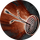
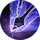
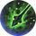

Точный выстрел
Открыть в интерактивной вики →
Описание
Годы охоты в таэрнийских лесах научили Лучников невероятной точности. Задержка дыхания и обострение чувств помогают им прицелиться так, чтобы нанести противнику значительный урон. Кроме того, если жертва уже находилась в состоянии одурманивания и короткого замыкания, она переживет шок, лишающий ее части устойчивостей. Лишение ее Очков Действия усиливает этот эффект.
Тип: дальняя атака, дебафф
Формула: 0.7 * сила + 0.3 * ловкость + оружие
дальнобойное оружие
Активные
Тип: дальняя атака, дебафф
Формула: 0.7 * сила + 0.3 * ловкость + оружие
дальнобойное оружие
Активные

Короткое замыкание
Отравленная стрелаУровни навыка
| Уровень навыка | Требуемый уровень | Урон | Шанс попадания | Выносливость | Устойчив. к физическому урону | Устойчив. к магическому урону | Устойчивости за похищенное ОД | Раунды |
|---|---|---|---|---|---|---|---|---|
| I | 17 | 90% | +18% | 14 | -5 | -5 | -2 | 1 |
| II | 18 | 100% | +20% | 15 | -5 | -5 | -2 | 1 |
| III | 19 | 110% | +22% | 17 | -6 | -6 | -2 | 1 |
| IV | 20 | 120% | +24% | 18 | -6 | -6 | -2 | 1 |
| V | 21 | 130% | +26% | 20 | -7 | -7 | -2 | 2 |
| VI | 22 | 140% | +28% | 21 | -7 | -7 | -2 | 2 |
| VII | 23 | 150% | +30% | 22 | -8 | -8 | -2 | 2 |
| I | 24 | 160% | +32% | 24 | -8 | -8 | -2 | 2 |
| II | 25 | 170% | +34% | 27 | -9 | -9 | -2 | 2 |
| III | 26 | 180% | +36% | 29 | -9 | -9 | -2 | 2 |
| IV | 27 | 190% | +38% | 31 | -10 | -10 | -2 | 2 |
| V | 28 | 200% | +40% | 33 | -10 | -10 | -2 | 2 |
| VI | 29 | 210% | +42% | 35 | -11 | -11 | -2 | 3 |
| VII | 30 | 220% | +44% | 37 | -11 | -11 | -2 | 3 |
| I | 31 | 230% | +46% | 40 | -12 | -12 | -2 | 3 |
| II | 32 | 240% | +48% | 43 | -12 | -12 | -2 | 3 |
| III | 33 | 250% | +50% | 45 | -13 | -13 | -2 | 3 |
| IV | 34 | 260% | +52% | 48 | -13 | -13 | -2 | 3 |
| V | 35 | 270% | +54% | 51 | -14 | -14 | -2 | 3 |
| VI | 36 | 280% | +56% | 54 | -14 | -14 | -2 | 3 |
| VII | 37 | 290% | +58% | 57 | -15 | -15 | -2 | 4 |